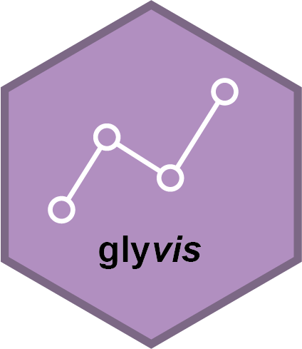
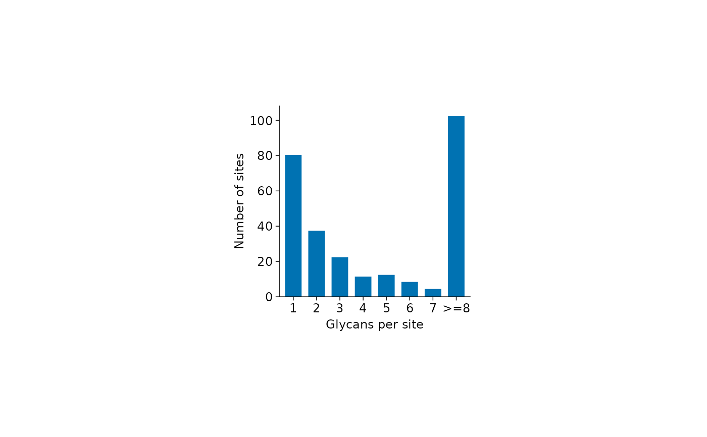
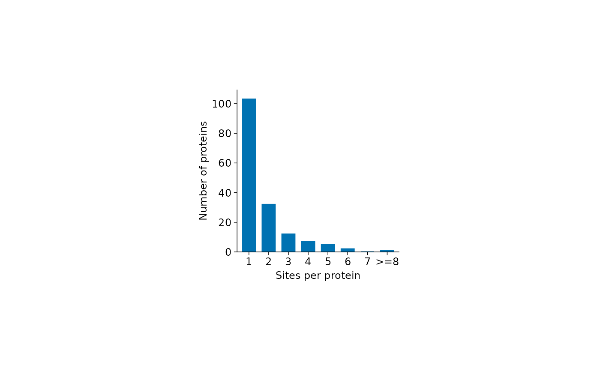
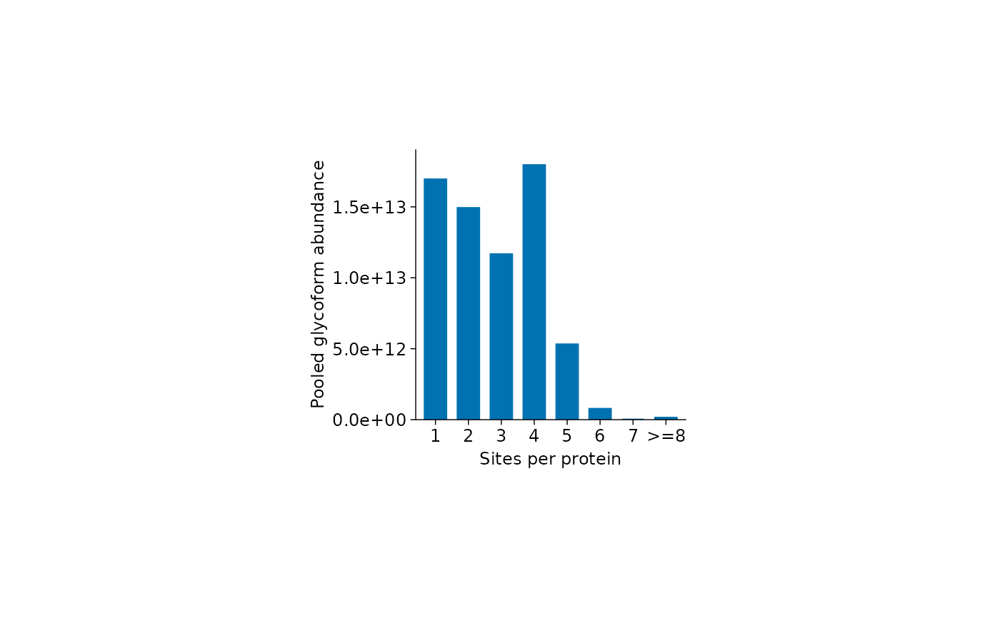

Distributions of glycans per site and sites per protein
plot_glycans_per_site.RdDraw single-colour bar plots with fixed bins 1, 2, 3, 4, 5,
6, 7, and >=8, pooling the annotations across all samples.
Usage
plot_glycans_per_site(
x,
...,
weight = "equal",
glycan_col = NULL,
title = NULL,
width = NULL,
height = NULL,
fontsize = 9,
family = "sans",
palette = NULL
)
plot_sites_per_protein(
x,
...,
weight = "equal",
title = NULL,
width = NULL,
height = NULL,
fontsize = 9,
family = "sans",
palette = NULL
)Arguments
- x
A
glyexp::GlycoproteomicSE()object. Other containers, including plainSummarizedExperimentand legacy experiments, are not accepted.- ...
Must be empty. Supply plotting controls by their full argument names.
- weight
Either
"equal"(default), counting sites or proteins in each bin, or"abundance", summing their glycoform abundances over all rows and samples withglydet::wsum(). Abundance weighting requires non-negative, finite, linear-scale abundances; missing values are omitted. These sums describe measured glycoforms, not independently measured protein abundance.- glycan_col
Row-annotation column identifying glycans. With
NULL(default), completeglycan_structureannotations are used. If structures are absent or incomplete, a message is printed andglycan_compositionis used for the whole experiment, so structure and composition identifiers are never mixed. Supply a column name to select it explicitly.- title
Optional plot title. Defaults to
NULL.- width, height
Plot-area dimensions in millimetres.
NULLuses the tidyplots defaults (50 by 50 mm);NAfills the available graphics device. These are not export-page dimensions.- fontsize
Base text size in points. Defaults to 9.
- family
Font family. Defaults to
"sans".- palette
Color vector. A named vector maps group names to fixed colors across plots and subsets; unnamed palettes follow factor order.
NULLuses tidyplots palettes. Heatmaps and correlation plots use the blue, near-white, and red anchors ofcolors_diverging_BuRd. Volcano plots use grey for points that do not meet both cutoffs. Other plots use the tidyplots defaults for discrete and continuous values.
Value
A tidyplot, also inheriting from ggplot. Its data contains
ordered category bins, count (number of sites or proteins), and
value (the plotted count or pooled abundance).
Details
Bars use the first colour in palette. The default plot area is 50 by 50 mm.
plot_glycans_per_site() counts distinct glycans at each combination of
protein and protein_site. In equal mode, the bar at 2 is the number
of sites carrying exactly two distinct glycans.
plot_sites_per_protein() counts distinct protein_site positions within
each protein. In equal mode, the bar at 2 is the number of proteins
with exactly two annotated glycosites. Glycan annotations are not needed
for this plot, and neither plot is restricted to N-glycans.
Duplicate measurements do not increase glycan or site counts. Their abundances are summed in abundance mode. Bin assignments use annotations regardless of zero or missing assay values; no sample-wise normalization is performed. All eight bins are retained, including empty bins.
Protein and site identifiers must be complete. For the glycans-per-site plot, rows missing the selected glycan annotation are excluded with a warning, including their abundance; sites with no remaining rows are omitted. Empty input or absence of eligible rows raises an error.
Examples
plot_glycans_per_site(glyexp::real_experiment)

plot_sites_per_protein(glyexp::real_experiment)

if (requireNamespace("glydet", quietly = TRUE)) {
plot_sites_per_protein(glyexp::real_experiment, weight = "abundance")
}
